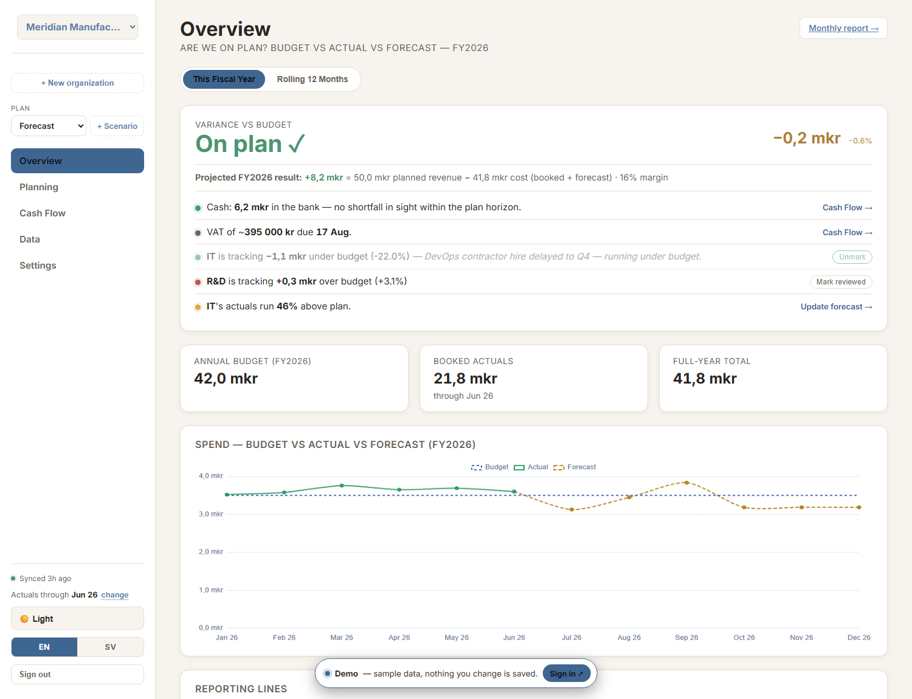
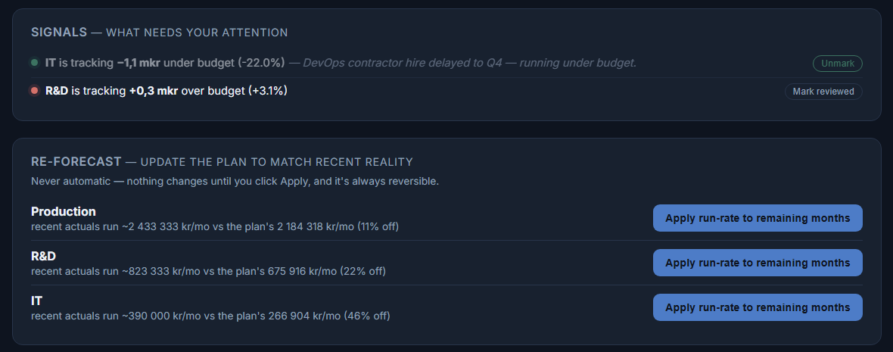
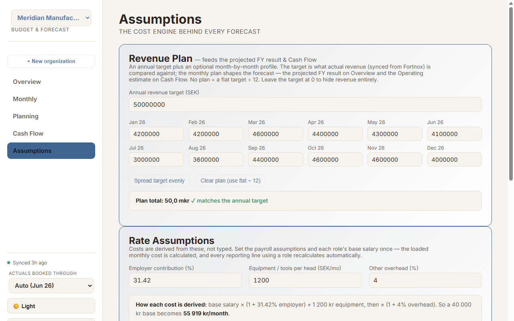
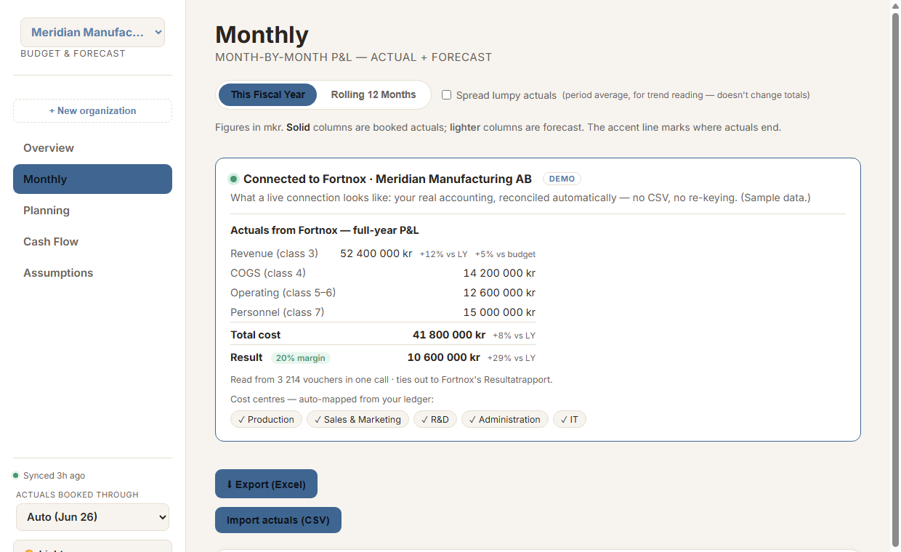

A multi-tenant financial planning app for growing companies. Every figure is built from drivers — your people and known costs — so changing one assumption flows through the whole plan instead of shattering a spreadsheet.
No sign-up — opens a full sample company you can click through.

Because the tool most SMEs plan with is the one most likely to quietly lie to them.
One moved row or broken reference and the forecast is wrong — with nothing to tell you. The bigger the model, the more places it can silently fail.
Change one salary assumption and you're hand-editing twelve months across five tabs. Nobody keeps that consistent for long.
Most FP&A platforms take weeks to onboard and a consultant to configure. Overkill for a company that just needs a plan it can trust.
Most tools stop at "here's a number." This one closes the loop back to the plan.

Set your assumptions once — employer costs, equipment, overhead — and each role's base salary. The app derives a fully-loaded monthly cost per role, then builds every cost centre up from real headcount lines on a timeline.
Change a driver and every month, every view, and the board pack recalculate together. There is no cell to forget.
Config, not code: the same engine renders a manufacturer or a consultancy with zero code changes — just different data. That's what keeps it cheap to fit to each company.

Connect Fortnox once. Every sync pulls your booked P&L — revenue, COGS, operating, personnel — straight from the ledger and lands it against your plan. No CSV, no re-keying, no month-end copy-paste.
It reads the whole year in one call and ties out to the öre against Fortnox's own Resultatrapport — tested at 55,000 vouchers in ~3 seconds. Any size, any fiscal year, corrections included.
That's the real difference from a spreadsheet: the numbers aren't something you maintain — they arrive, correct.

A complete planning loop — plan, forecast, track, and report — in one place.
Headcount, one-offs, and run-rate costs roll up from the ground truth, not typed totals.
Plan the fiscal year, then watch a rolling-12-month forecast move as actuals land.
Snapshot the plan's full trajectory, change drivers, and compare alternatives against the live plan, month by month.
Connect once — your booked P&L syncs automatically and ties out; every cost centre shows budget vs actual vs forecast.
One click produces a clean, print-ready summary with variance commentary.
Many companies, one app — each isolated at the database, switchable in a click.
Boring, legible, and secure by default — on purpose.
Every query is tenant-scoped in Postgres itself. The public API key is safe in the browser precisely because the database enforces isolation.
Owner / editor / viewer are enforced server-side. Creating an org is an atomic function, so a client can't add itself to data it doesn't own.
One JavaScript model computes every number. A customer is pure data + settings — no bespoke code per client.
Plain HTML/JS on a CDN-backed Postgres. It deploys as flat files and there's nothing to break in a pipeline.
Supabase (Postgres · Auth · RLS) · vanilla JavaScript · Chart.js · deployed on GitHub Pages.